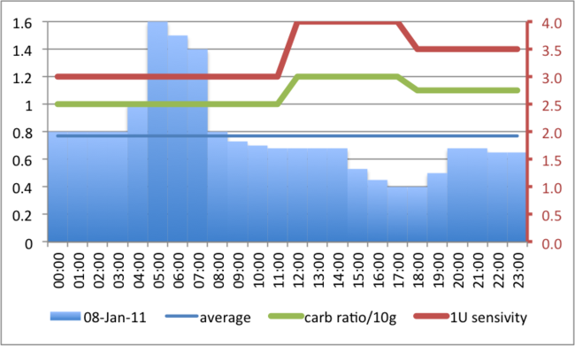
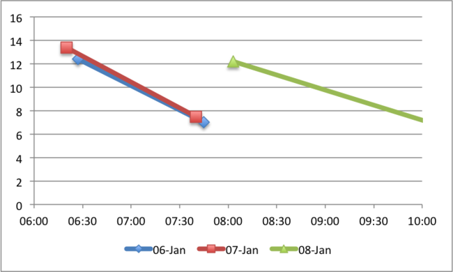

I am about to change some of my insulin settings, but before I do I thought I’d write them here.
Below is a graph of how things are currently. As I am changing things you can deduce that the regime is not correct, but it isn’t too far off (I think). The four different lines are (from the bottom)
- The thick blue columns are the hourly dose in 100iU units (scale on the left in U/hr). The early morning spike is an attempt to handle my “dawn phenomenon” but it’s not quite working as I’d like. The afternoon dip was a reflection of many lows which I had had in the autumn of 2010. In total I take 18.59U basal daily.
- The thin blue line is the average basal of 0.77 hourly (scale on the left in U/hr).
- The green line is my Carb Ratio in units per 10g (scale on the left in U/10g). A ratio that varies from 1.0 to 1.2 back to 1.1 is quite low - most of these ratios go from 1.0 to 2.5.
- The red line is drawn with the scale on the right - my sensitivity in mmol/L for 1 U of insulin. These sensitivity are very high - they are normally 2 to 3 - so the 3 to 4 as I have here are unusual.

My HbA1C as of 5 Jan 2011 is 7.3 which suggests that the overall insulin dose is quite close to being correct (as a value of 7.0 is quite good, with 6.5 being really very good) - but - there are often quite a lot of corrective doses of extra insulin. This mean that either more basal is needed or there is a problem with my ratios and/or carb estimation.
The first set of changes relate to some morning readings - as shown here. Though only 3 days readings are shown, this pattern has I believe been going on for about 6 weeks. I have anecdotal evidence of post breakfast lows after giving corrective doses first thing - but foolishly I hadn’t been taking more glucose readings at breakfast. I had been assuming that the correction was still making its way through the system and so didn’t retest.

This chart says a few things to me:
I need more basal on the run up to 6:00/6:30 in the morning. These elevated readings of 12 or 13 are not the result of a pre-dawn hypo rebound - there is no way the readings could drop so quickly afterwards. Either my sensitivity in the morning is off the scale at 6 mmol/L per 1U or I have too much basal between 6:30 and 7:30 (I never eat at 06:30, my first food of the day is at 07:30)
On the morning of the 8th I tried “playing” with these and instead of giving the normal corrective dose I gave only half and this explains why the drop in glucose levels took twice as long as before. Neither of the likely explanations (that I have too much basal or an off-the-chart sensitivity) are what I would call “attractive” but I think it makes more sense to deal with the too-much-basal - which when combined with knowing that I do need more basal in the hours up to 6 am - can be as simple as to move the dawn phenomenon basal spike earlier in the morning.
Moving it by two hours seems too much (though I can’t support this statement - it’s just a gut feeling) so I’ll start by moving it by one to see the effect. I’ll report on that in a week or so.